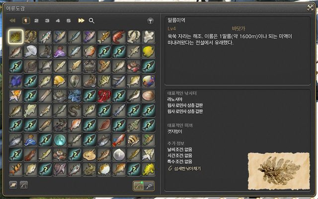
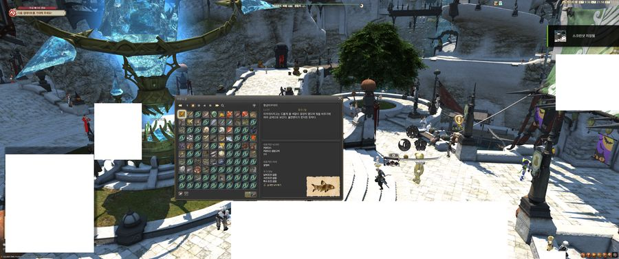

읽은 페이지 · 눌러서 보기
아직 읽은 페이지가 없담메.
스크린샷
낚음
확인 필요
낚았지만 트래커에 없음
스크린샷을 올리면 여기에 판독 결과가 나온담메.
파이널 판타지 14 어류도감 스크린샷에서 낚은 물고기를 읽어, Fish Tracker에 바로 넣을 수 있는 목록으로 만들어 준담메. 사진은 이 브라우저 안에서만 읽고 어디에도 안 올린담메.
어류도감 오른쪽 위 깔때기 아이콘을 꺼달람메. 켜져 있으면 칸 위치가 달라져서 못 읽는담메.
한 페이지당 스크린샷 한 장이람메. 도감 창만 잘라도 되고 게임 전체 화면도 된담메. 1~16페이지 전체를 업로드할 필요는 없지만, 업로드되지 않은 페이지는 당연히 목록에서 빠지니 주의하람메.


도감 1~16페이지를 한꺼번에 올려도 된담메. 순서는 상관없담메. 게임 전체 화면을 찍어도 도감을 찾아낸담메.
아직 읽은 페이지가 없담메.
스크린샷을 올리면 여기에 판독 결과가 나온담메.